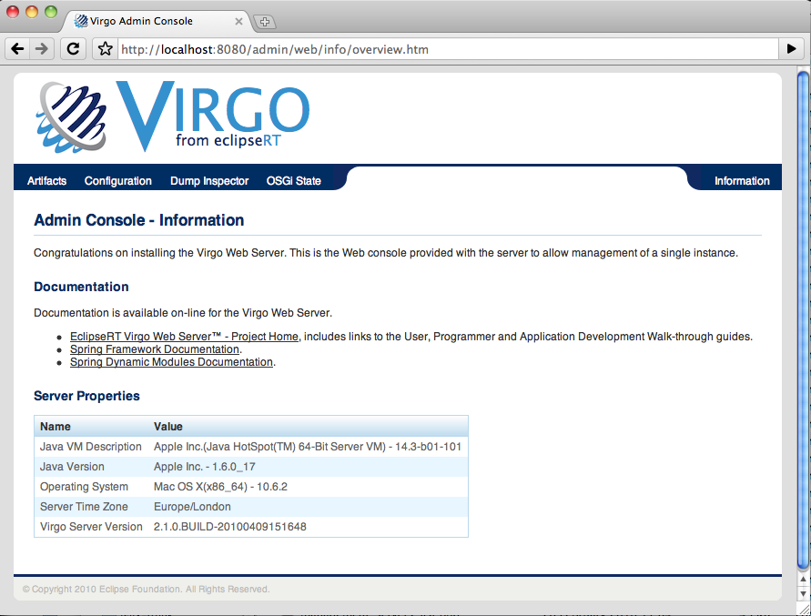
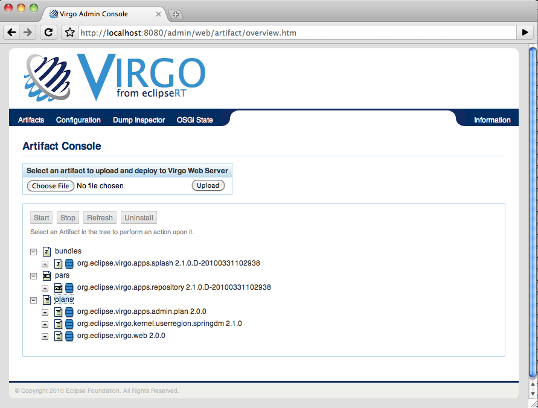
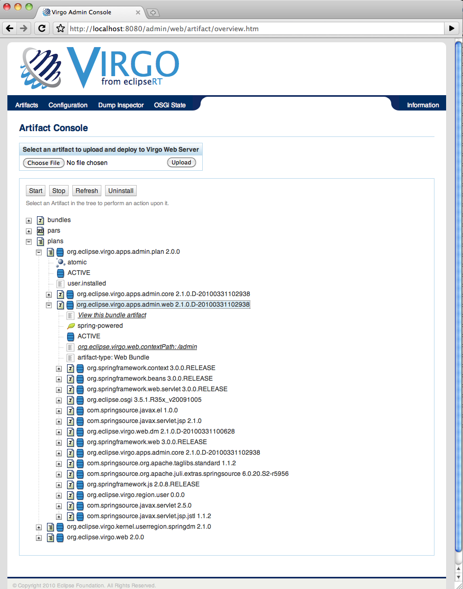
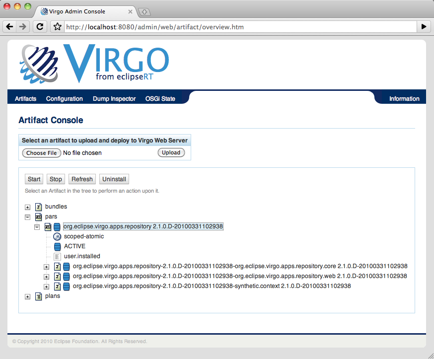
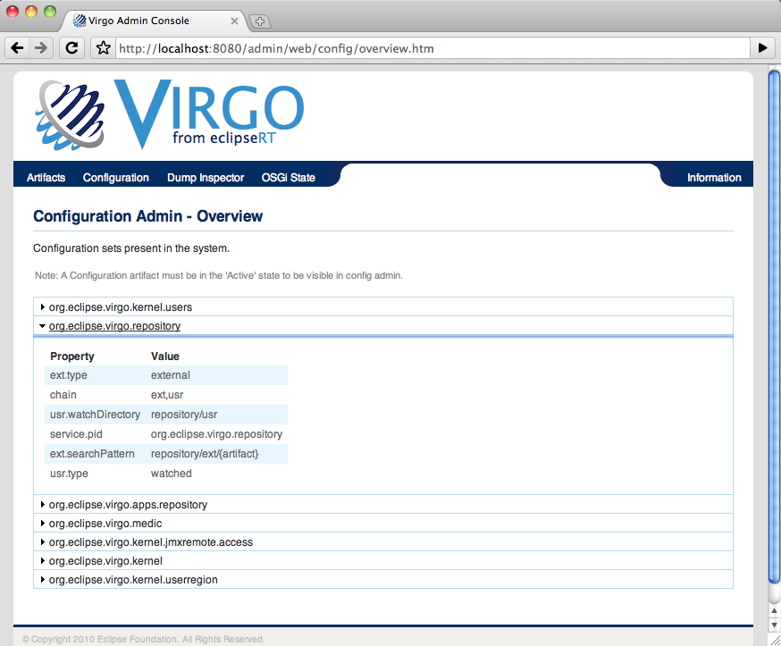
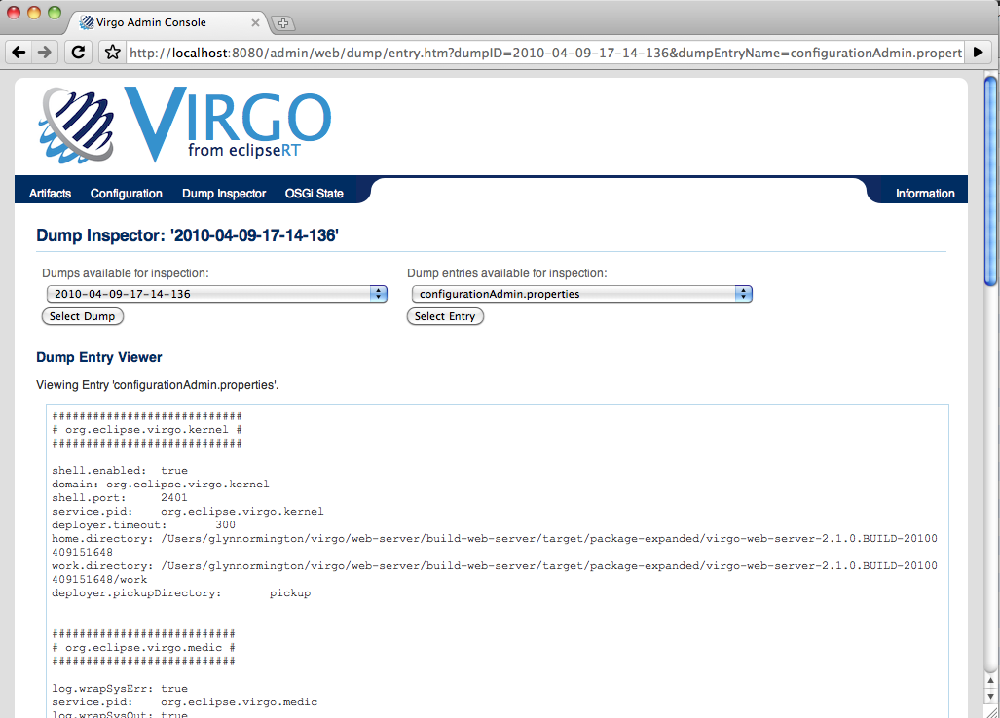
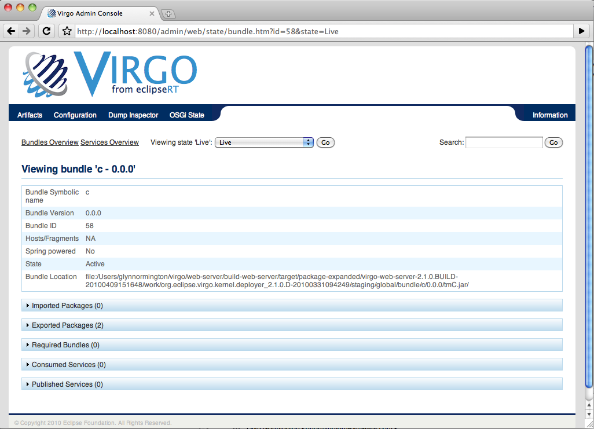

The Web Admin Console
The Admin Console
The Web Server Admin Console is a Web application for managing a single instance of Virgo for Apache Tomcat or Virgo Jetty Server (referred to, generically, as "Web Server" below). Using the Admin Console, you can:
-
View and manage the lifecycle of artifacts already deployed to the Web Server instance. Artifacts include bundles, configuration files, PARs, and plans. Lifecycle management tasks include starting, stopping, refreshing, and uninstalling the artifacts.
-
View the properties of the configuration artifacts deployed to Web Server.
-
View details of dump files that Web Server might have generated after encountering a problem. This feature is particularly valuable if Web Server fails to install a new artifact due to resolution failures; the OSGi state inspector can help you discover the exact artifact causing the resolution failure.
-
View an overview and details of the OSGi State of Web Server, or in other words, a list of all bundles currently installed in Web Server and their state. You can then drill down into the details of each bundle, such as its symbolic name, packages it imports and exports, services it provides and consumes, and so on. You can also view the bundles that were deployed when an exception that generated a dump occurred.
|
Note
|
This section is not applicable to Virgo Nano. |
ancor:admin-console-login[]
Invoking the Admin Console
To use the Admin Console, start the Virgo for Apache Tomcat and then enter the following URL in your browser of choice.
http://localhost:8080/admin
Replace localhost with the hostname of the computer on which the Virgo for Apache Tomcat is running if it is not the same as the computer on which you are running your browser.
The Admin Console uses basic authentication, therefore you will need to enter the default administration ID and password.
ID: admin Password: admin
The following graphic shows the main page of the Admin Console.

Use the links at the top of the console to perform various tasks, such as viewing and managing artifacts (<emphasis role="bold">Artifacts*), viewing the properties of deployed configuration artifacts (<emphasis role="bold">Configuration*), viewing details of dumps (<emphasis role="bold">Dump Inspector*), and viewing the OSGi state of the Web Server instance (<emphasis role="bold">OSGi State*).
You can always return to the main Admin Console page by clicking <emphasis role="bold">Information* in the top right-hand corner.
The `Server Properties` section provides information about Web Server itself, such as details about the Java Virtual Machine (JVM), the operating system on which Web Server is installed, the time zone configured for the computer, and the complete version of Web Server.
Changing the Admin User
To change the ID and password for the Admin Console, update the SERVER_HOME/configuration/org.eclipse.virgo.kernel.users.properties file. First specify the administration username by changing the value of the role.admin property. Then set the password of this new user by adding a new property called user.username, where username refers to the actual name of the user. Finally, restart Web Server for the changes to take effect.
For example, if you want change the administration username to juliet with password capulet, change the file as follows:
##################
# User definitions
##################
user.juliet=capulet
##################
# Role definitions
##################
role.admin=julietThe Admin Console always runs against the admin role.
Typical Admin Console Use Cases
The following use cases describe the typical tasks that you can perform with the Admin Console:
Viewing and Managing the Lifecycle of Deployed Artifacts
The following procedure describes how to view the list of artifacts that are currently deployed in the user region of Web Server. It then describes how to stop, start, refresh, and uninstall the deployed artifacts.
-
From the main Admin Console page, click the Artifacts link at the top. In the lower part of the page, the console displays a tree structure that displays the four kinds of artifacts that you can deploy to the user region of Web Server: bundles, configuration files, PARs, and plans. When you first install Web Server, there will already be a number of artifacts deployed related to the Admin console itself, the main splash screen, the repository, and so on. The following graphic shows an expanded tree that displays a few of the deployed artifacts: 
-
To view details of a particular artifact, click the "`" to the left of the artifact to expand the tree. The following graphic shows an expanded
org.eclipse.virgo.apps.admin.webbundle:  The particular details that the Admin Console displays depends on the artifact. For example, for all artifacts you can view their state and how it was installed (such as by a user using the Admin Console or programmatically). The two most common states are Active (running and ready to be used) and Resolved (all dependencies resolved but you must start it before you can use it). An artifact can also be in one of the transition states, such as Starting and Stopping. As shown in the preceding graphic, the Admin Console provides a link for Web modules that you can click on to actually invoke the application (org.eclipse.virgo.web.contextPath:/adminin the example above). For PARs and plans, the Admin Console also displays whether the artifact is:-
Scoped. Scoping specifies whether Web Server should deploy the members of the PAR/plan in their own scope; when scoping is disabled, Web Server deploys the artifacts into the global scope and they are accessible by all other artifacts.
-
Atomic. When a PAR/plan is atomic, Web Server manages the lifecycle of all its member artifacts as a single entity, which means if one artifact member is started, then Web Server starts all the PAR/plan artifacts. If one artifact fails to start, then Web Server stops all other artifacts in the PAR/plan.
-
The following graphic shows details of a PAR, in particular that it is both scoped and atomic:  Finally, for bundles, PARs, and plans, you can see the list of bundles that they depend on; this typically means the bundles that export the packages that they import.
To manage the lifecycle of an artifact, click on its name in the expanded tree to enable the lifecycle buttons. Then, depending on the current state of the artifact, you can:
-
Start the artifact. All dependencies of the artifact must have been resolved for you to start it. After successfully starting the artifact, it is in the Active state and you can use the application associated with the artifact.
-
Stop the artifact. This moves the artifact from an Active to Resolved state, and you cannot use the application associated with the artifact.
-
Refresh the artifact. This action updates the physical contents of the artifact; use this button when you have changed the artifact in some way and you want your changes to take effect.
-
Uninstall the artifact. This action removes the artifact from Web Server and it does not show up in the Admin Console any more. To use the application associated with this artifact, you must re-install the artifact.
Installing a New Artifact
The following procedure describes how to install a new artifact (bundle, PAR, plan, or configuration file.) The procedure is similar for all types of artifacts; the procedure uses a WAR file as an example.
-
From the main Admin Console page, click the Artifacts link at the top.
-
Click the Browse button to invoke the file loader application for your platform. Note that the Browse button searches the computer that is running the browser in which you invoked the Admin Console and not the computer on which Web Server is running, in the case where they are different. Use the file loader to find the artifact. This can be a WAR or JAR file bundle, a configuration artifact that contains properties, an XML file that corresponds to a plan, or a PAR file.
-
Click Upload to actually upload the artifact to Web Server. Web Server automatically attempts to resolve all dependencies, and then puts the artifact in an Active state if possible. If all is successful, the message
Artifact Deployedappears next to the <emphasis role="bold">Artifact Console* header. If there is an error, a message to that effect is displayed; to get more details about the error, see the terminal window from which you started Web Server. -
Expand the artifact tree to view your newly deployed artifact. If Web Server installed it without errors, it should show up in the appropriate section and be in an Active state.
Viewing Properties of Deployed Configuration Artifacts
The following procedure describes how you can view the list of configuration artifacts that are currently deployed to Web Server, and then view the specific properties that are defined for a particular configuration artifact.
-
From the main Admin Console page, click the <emphasis role="bold">Configuration* link at the top. The Admin Console displays all the configuration artifacts that are currently deployed, as shown in the following graphic: 
-
To view the properties defined for a particular configuration artifact click the arrow to the left of its name.
Viewing the Details of Dump Files
The following procedure describes how to view the details of any service dumps that have occurred in Web Server. Each time a dump is triggered for Web Server, the server creates a directory in $SERVER_HOME/serviceability/dump with a name corresponding to the time the dump occurred, and then the server populates the directory with detailed information. Using the Admin Console, you can easily view this information.
A service dump is triggered when there is either a failure in the Web Server code or Web Server detects a thread deadlock in either its own code or a user application. The service dump contains a snapshot of all the important state from the running Web Server instance. <emphasis role="bold">NOTE:* This snapshot is not intended for end user consumption but is useful for service personnel.
-
From the main Admin Console page, click the Dump Inspector link at the top.
-
In the drop-down box on the left, select the dump you want to inspect based on its timestamp.
-
Click Select Dump.
-
In the right drop-down box, select the type of dump information you want to view. For example,
summary.txtprovides a short summary of why the dump might have occurred. Thethread.txtoption provides information about the state of the Web Server threads at the time of the dump, including any that were deadlocked. Therepositoryoptions provide information about what was in the external and user repositories at the time of the dump. TheconfigurationAdmin.propertiesoption provides a snapshot of the complete configuration of Web Server, including the kernel and repositories. -
Click Select Entry. The Admin Console displays the information in the Dump Entry Viewer, as shown in the following graphic: 
Note that the dump entry osgi.zip is a binary OSGi state dump which should be viewed as described in
Viewing Overview and Details of the OSGi State.
Dumps may contain other binary entries which are not intended for viewing via the dump inspector.
For example, heap.out contains a dump of the Java heap and region.digraph
contains a dump of the sharing policy between kernel and use region (this is used by the OSGi state dump inspector).
Viewing Overview and Details of the OSGi State
The following procedure describes how you can view the OSGi state of the Web Server, either currently or at the time that a particular service dump occurred.
The OSGi state is a list of bundles that are currently installed. When viewing the current state, additional information is available such as whether each bundle is Spring powered and a list of services in the OSGi service registry. This additional information is not available when viewing a state dump.
-
From the main Admin Console page, click the OSGi State link at the top. By default, the Admin Console displays the complete list of bundles that are currently installed in Web Server. For each bundle, the console displays its internal ID, its symbolic name, its version, and its current state (usually either Active or Resolved.)
-
To view the bundles that were installed at the time of a service dump, select the service dump based on its timestamp from the drop-down box on the right and click Go.
-
To view details about a particular bundle, click on its bundle ID. A full description of the bundle is displayed, as shown in the following graphic:  The console displays again the symbolic name, version, and internal ID of the bundle. It then displays whether the bundle is Spring powered and the exact physical location of the bundle JAR file on the computer that hosts Web Server. The console then displays the full list of packages that the bundle imports, as well as the bundles that in turn export these imported packages. The console also displays the packages that the current bundle exports, and then in turn the list of other installed bundles that are currently importing these exported packages. For each package, you can drill down and view details of the corresponding bundle. Similarly, the console displays the consumed and provided OSGi services. Finally, the console also displays information about the Spring context, if the bundle is Spring powered.
-
To view the full list of OSGi services, click the
Services Overviewlink from the main OSGi state page -
Typically, the list of bundles and services can be very long, making it difficult to find a particular bundle. Use the Search box at the top right corner to narrow down the list of displayed bundles.
Enter a package name with wildcards '*' representing part of a package name (excluding periods) and
'*' representing one or more components of a package name separated by periods.
For example, *.virgo.* displays Virgo packages.